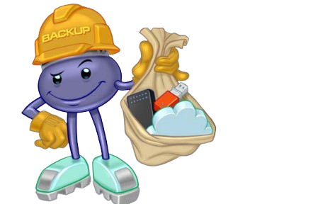

Proteção Realmente Importa?
Na internet, ameaças digitais estão em todo lugar e a maioria das infecções por códigos maliciosos acontece por descuido ou falta de informação. A boa notícia é que se proteger não exige ser um especialista. Com hábitos simples e as ferramentas certas, você reduz drasticamente as chances de ter seu dispositivo comprometido, seus dados roubados ou suas contas invadidas. Confira abaixo as principais práticas de proteção contra malware.
